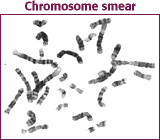
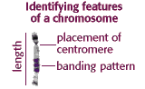

Karyotyping Activity |
Introduction |
|
This exercise is a simulation of human karyotyping using digital images of chromosomes from actual human genetic studies. You will be arranging chromosomes into a completed karyotype, and interpreting your findings just as if you were working in a genetic analysis program at a hospital or clinic. Karyotype analyses are performed over 400,000 times per year in the U.S. and Canada. Imagine that you were performing these analyses for real people, and that your conclusions would drastically affect their lives. |
|
During mitosis, the 23 pairs of human chromosomes condense and are visible with a light microscope. A karyotype analysis usually involves blocking cells in mitosis and staining the condensed chromosomes with Giemsa dye. The dye stains regions of chromosomes that are rich in the base pairs Adenine (A) and Thymine (T) producing a dark band. A common misconception is that bands represent single genes, but in fact the thinnest bands contain over a million base pairs and potentially hundreds of genes. For example, the size of one small band is about equal to the entire genetic information for one bacterium. |
|  |  |
|
The analysis involves comparing chromosomes for their length, the placement of centromeres (areas where the two chromatids are joined), and the location and sizes of G-bands. You will electronically complete the karyotype for three individuals and look for abnormalities that could explain the phenotype. |
|
This exercise is designed as an introduction to genetic studies on humans. Karyotyping is one of many techniques that allow us to look for several thousand possible genetic diseases in humans. You will evaluate 3 patients' case histories, complete their karyotypes, and diagnose any missing or extra chromosomes. Then you'll conduct research on the internet to find web sites that cover some aspect of human genetics. If this is an assignment for a class, you should turn in a total of 7 answers on paper (2 for each patient, 1 for the internet search). |


The Biology Project
The University of Arizona
Tuesday, June 9, 1998
Contact the Development Team
http://biology.arizona.edu
All contents copyright © 1996. All rights reserved.